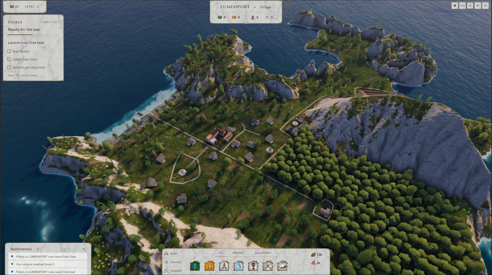

Playtests, polish, and asking for advice
A friend I used to play Anno 1800 with came over to try my game. He made it all the way to bringing iron ore home! Along the way his mining island starved three times, and he had no idea... the notifications were right there! I was sitting next to him trying not to laugh, haha.
That afternoon pretty much sums up where the game is now. It works, you can play it to the end, and now it has to be clear and feel good. That's what this month was about: playtesting, guiding the player, and a lot of polish. And something new at the end: I started asking people for advice.
Playing it myself
First I recorded myself playing the whole two-island game, from the first woodcutter to bringing iron ore home. Then I went through the recording and marked every stretch where I was just sitting there, waiting, with nothing to build. There were way more of those than I thought! So I did a pacing pass on the economy, and on my next run it felt okay.
Guiding the player
Before letting anyone else play, I had to figure out how much the game should guide you. I'm looking for the balance that's the most fun for the kind of player I'm making this for. No hand holding, but a bit of direction until you get familiar with how the systems work. Then the game gets out of your way.
That's why there are goals now. There's always one on screen, in a chain that walks you from your first woodcutter to bringing iron ore home from the mining island. You always have something to work towards, but how you get there is up to you.
And notifications: when people go hungry, starve or die, it goes into a log, and one click takes you right there, on any island. Right now it's a simple list, and it's not loud enough yet (you saw why at the top). But I have bigger plans for it. As soon as I have the time, these will turn into barks: your people speaking up when something's wrong, with characters and voice acting. I want them to be a strong part of the narrative design, not just a list of warnings.

A friend plays
Back to my friend. I was a bit nervous, he knows the genre well. I gave him a few tips, but mostly I just let him figure things out. And he finished it! Every goal, all the way to the iron ore.
Someone new to the controls, who plays a lot of games like this, notices things I just don't anymore. I already have the muscle memory, so I don't even see them. He kept trying to get out of building mode with right click. He deleted buildings by accident, because the demolish button doesn't ask first. He wanted to move a building he put in the wrong spot, and you can't do that yet. And the starving... The notifications were there, they just weren't loud enough to get his attention.
Watching someone play is still the most valuable thing I can do. All of it is on my list now, and I keep finding new ways to make the game more comfortable to handle.
Making it look better
Then came the visuals: getting all the big pieces of the picture to fit together. This is probably the most challenging part for me right now. The artistic workflow is new to me, I'm still learning it as I go. But I can feel that I'm improving.
The vegetation felt like the weakest part, and it carries most of the first impression, so I spent a lot of time on trees. They have a new shader, so they gently sway and catch the light, and I reworked the oak crowns in Blender so they look good from high above. The other species got the same treatment.
I collected a bunch of reference photos and made new terrain textures from them. The buildings got a weathered look, because they were way too clean and fake, and the dirt roads got a visual update too. Cloud shadows drift over the islands and the sea now, there's foam where the waves hit the shore, and the light is warmer, which is a lot easier on the eyes when you play for hours.

None of these is a big thing on its own. But I want every little part that adds to the immersion to be there, and to fit together tastefully.
When I lose momentum
I'll be honest, it's not always smooth. Some days I sit in front of a tree for hours and it just doesn't look right, and I start doubting the whole thing. Working alone, there's nobody to tell you it's fine, keep going.
A book has been helping me a lot with this: Art & Fear by David Bayles and Ted Orland. Whenever I lose momentum, a chapter of it puts me back on track. If you make anything yourself, I can recommend it.
It's not silent anymore
Until now the game had no sound at all. Now Bence's sounds are in! Building, placing and clicking all make a sound, and you hear the sea, the towns and the harbours depending on where you look. My favourites are the chimes. Getting a nice little jingle when I complete something actually makes me happy :D It's a first pass, far from final, but it changes how the game feels more than I expected. Thank you, Bence!
Asking for advice
For about a year I was heads down, building. Now I'm starting to reach out.
I wrote to another indie developer who is making a city builder, and I'm looking for a few more. Maybe we can start a small group and show each other our progress periodically. Building alone gets lonely.
I'm reading up on marketing, because honestly, I don't know much about it yet. And I'm writing to a few publishers. Not to pitch anything, just to ask how they see a game like this at this stage, and what they'd want to see.
What's next
Two things: a go to market plan, and more polish, with the visuals as the main focus. With the advice I'm gathering now, I want to work out how and when to show the game to more people. Meanwhile I'll keep making it look better, piece by piece.
And of course I'll fix what my friend found before the next round of playtests.
Thanks for reading!
If you want to see how it plays out, sign up for the next devlog by email.
Comments